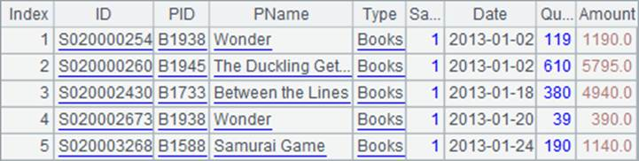

Use JDBC Enterprise in the same way as you use PJDBC, such as invoking call statement in Java to execute SPL statement and calling a cellset file. You can use functions unique to the Enterprise edition to perform the operation. Take the following cellset file testQJDBC.splx as an example:
|
|
A |
|
1 |
=dql("pseudo/test.glmd") |
|
2 |
=A1.query("select EID, Name, ifMarried from emps") |
|
3 |
=A2.i() |
|
4 |
>output(ifpure(A3)) |
|
5 |
return A3 |
The cellset file uses some functions unique to esProc Enterprise edition. A1 uses dql() function to open a DQL definition file; A2 executes a query statement in DQL; A3 uses P.i() function to convert the result to a pure table sequence where all fields have same data type. To check if the conversion is successful, A4 uses ifpure() function to judge whether it is a pure table sequence or not and output the result.
Use the following Java code to invoke the Enterprise edition JDBC to execute the cellset file. Here we specify configuration file as raqsoftConfig.xml; use the default file if no configuration file is specified:
public void testDataServer(){
Connection con = null;
java.sql.CallableStatement st;
try{
// Establish connection
Class.forName("com.esproc.jdbc.QDriver");
con= DriverManager.getConnection("jdbc:esproc:local://?config=D:/soft/raqsoft/esProc/q-server/webapps/qvs/WEB-INF/home/raqsoftConfig.xml");
// Invoke the stored procedure; createTable1 is the script file name
st =con.prepareCall("call testQJDBC()");
// Execute stored procedure
st.execute();
// Get result set
ResultSet rs = st.getResultSet();
// Process result set simply: output field names and data
ResultSetMetaData rsmd = rs.getMetaData();
int colCount = rsmd.getColumnCount();
for ( int c = 1; c <= colCount;c++) {
String title = rsmd.getColumnName(c);
if ( c > 1 ) {
System.out.print("\t");
}
else {
System.out.print("\n");
}
System.out.print(title);
}
while (rs.next()) {
for (int c = 1; c<= colCount; c++) {
if ( c > 1 ) {
System.out.print("\t");
}
else {
System.out.print("\n");
}
Object o = rs.getObject(c);
System.out.print(o.toString());
}
}
}
catch(Exception e){
System.out.println(e);
}
finally{
// Close connection
if (con!=null) {
try {
con.close();
}
catch(Exception e) {
System.out.println(e);
}
}
}
}
The syntax is the same as invoking the ordinary esProc JDBC. Here we use "call testQJDBC()" to execute the SPL file and result is as follows:

Note that dql(), P.i() and ifpure() functions used in this cellset file cannot be used for ordinary esProc JDBC.
Read DQL Tool to find more about esProc Enterprise edition DQL.